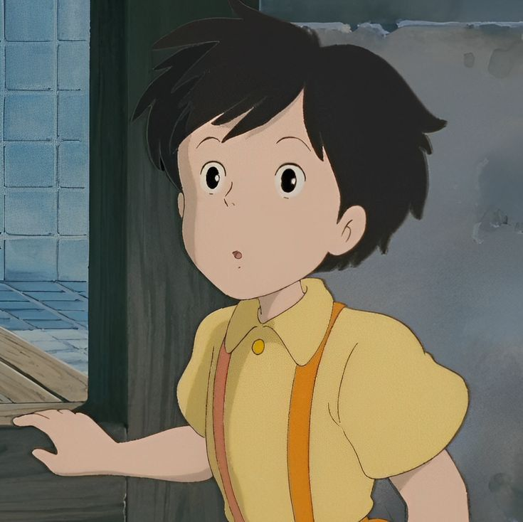
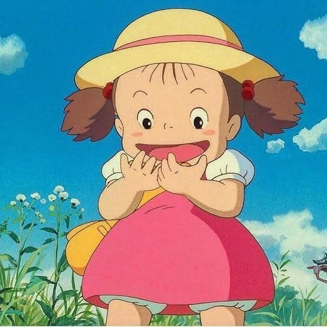
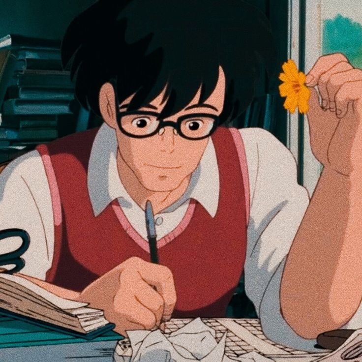
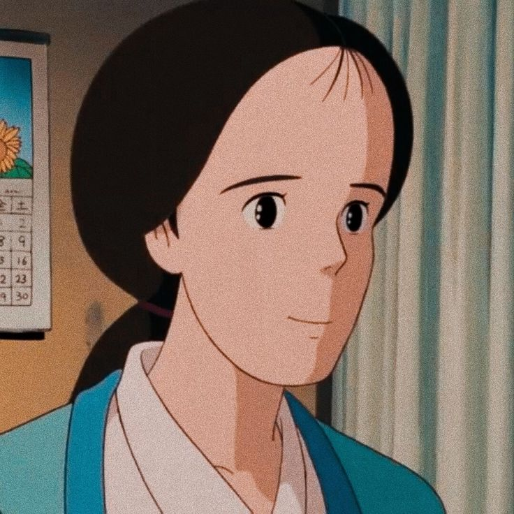
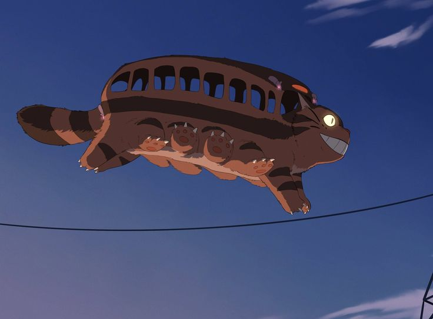

Satsuki Kusakabe
Satsuki é a irmã mais velha de Mei Kusakabe e filha de Tatsuo Kusakabe e Yasuko Kusakabe. Ao se mudar para o país, ela e sua irmã Mei descobrem a casa de Totoro, uma criatura antropomórfica gigante parecida com um gato. Através de uma série de aventuras, eles se tornam muito próximos.

Mei Kusakabe
Mei Kusakabe é a irmã mais nova protagonista de Satsuki, de quatro anos, em My Neighbor Totoro e Mei and the Kittenbus. Ela é filha de Tatsuo e Yasuko Kusakabe. Ela também é uma das mascotes do Museu Ghibli em Mitaka.

Tatsuo Kusakabe
Tatsuo Kusakabe é pai de Satsuki e Mei, duas garotinhas super animadas.

Yasuko Kusakabe
Yasuko Kusakabe mãe das duas crianças que está doente e vive no hospital por conta de uma tuberculose.

Catbus
Catbus é um personagem coadjuvante fictício do filme My Neighbor Totoro do Studio Ghibli, dirigido por Hayao Miyazaki. É um gato grande, sorridente, de doze patas, cauda grande e espessa e corpo oco que serve de ônibus, com janelas e assentos forrados de pêlo

Clique aqui para voltar a página inicial! ➤